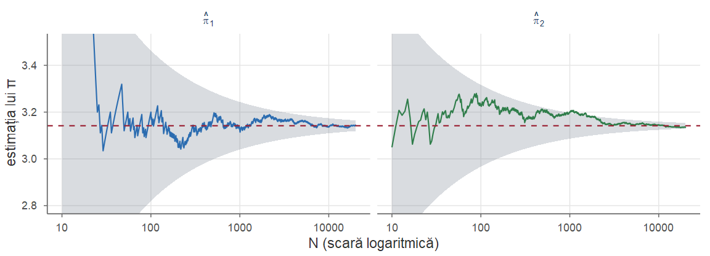
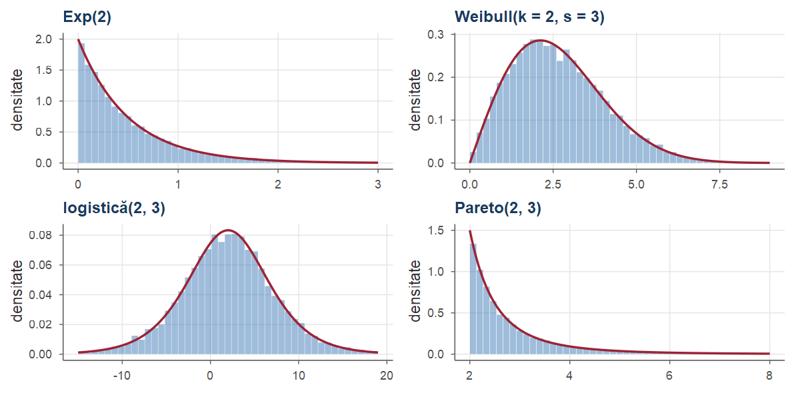
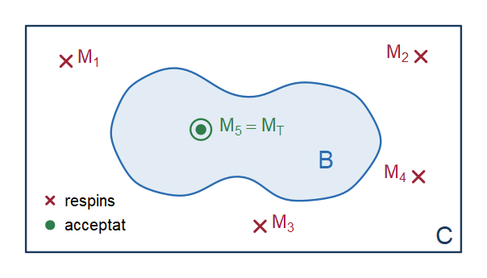
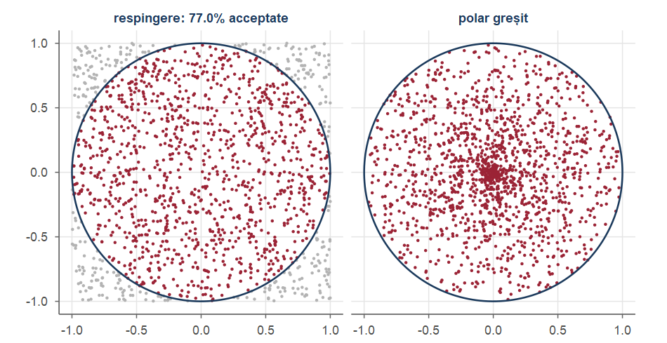
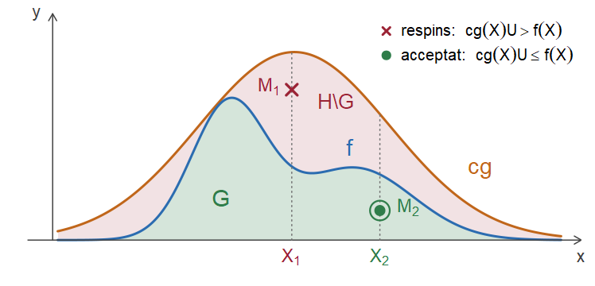
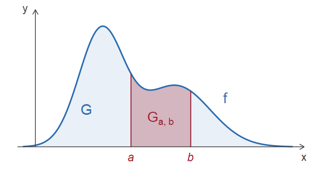
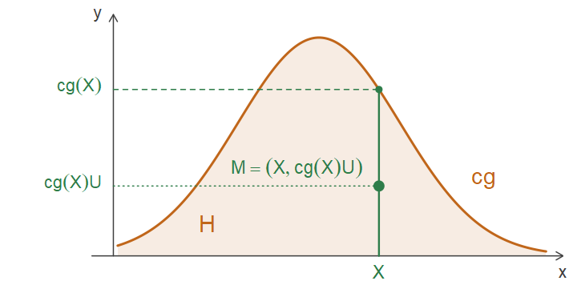
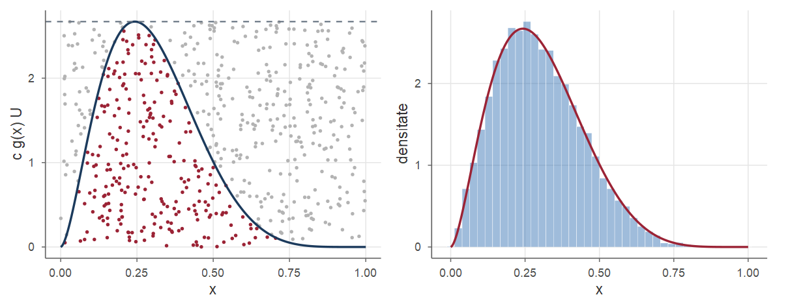
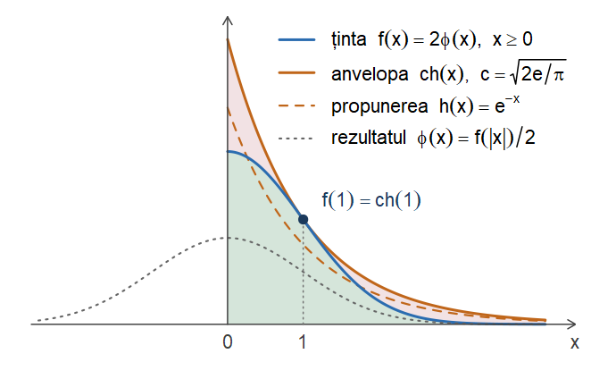

Cursul 4. Simulare: metoda Monte Carlo, metoda inversă, metoda respingerii, transformări
Statistică · Cursul 4
Alexandru Amărioarei
Universitatea din București · Facultatea de Matematică și Informatică · 2026–2027
Planul cursului
A simula o variabilă aleatoare înseamnă a produce, cu ajutorul calculatorului, numere care se comportă ca realizări independente ale ei. În Cursul 3 am demonstrat că există șiruri de variabile independente cu orice repartiții date; azi facem acest rezultat constructiv.
Obiectivele
numerele pseudo-aleatoare și principiul Monte Carlo: estimatorul, nedeplasarea, consistența, eroarea standard \(\sigma/\sqrt N\), intervalul aproximativ și volumul simulării;
metoda inversă pentru repartiții discrete și continue: exponențială, Cauchy, geometrică, Poisson;
metoda respingerii: uniforma pe o mulțime, primul punct al unui șir care cade într-o mulțime dată, repartiții cu densitate, numărul mediu de încercări;
simularea prin transformări: criteriul de factorizare, metoda Box–Muller, Gamma și \(\chi^2\);
alegerea metodei potrivite și verificarea în R a rezultatelor teoretice.
Temele: Monte Carlo · metoda inversă · metoda respingerii · transformări · exerciții rezolvate.
Recapitulare
Rezultate din Cursul 1 folosite azi
LNM tare (Teorema 61 din Cursul 1): dacă \(Y_1,Y_2,\dots\) sunt \(\iid\) cu \(\E|Y_1|<\infty\), atunci \(\bar Y_N=\frac1N\sum_{i=1}^NY_i\asto\E[Y_1]\).
TLC (Teorema 64 din Cursul 1): dacă \(\sigma^2=\Var(Y_1)\in(0,\infty)\), atunci \(\sqrt N(\bar Y_N-\E Y_1)/\sigma\dto\Norm(0,1)\); în plus \(\Var(\bar Y_N)=\sigma^2/N\) (Corolarul 43 din Cursul 1).
Lema lui Slutsky (Teorema 58 din Cursul 1): \(A_N\dto A\) și \(B_N\pto b\) implică \(A_NB_N\dto bA\); teorema aplicațiilor continue (Teorema 57 din Cursul 1).
Funcții de blocuri disjuncte de v.a. independente sunt independente (Propoziția 39 din Cursul 1); criteriul de factorizare (Propoziția 38 din Cursul 1): v.a. cu densitățile \(f_{X_1},\dots,f_{X_n}\) sunt independente \(\iff\)\((X_1,\dots,X_n)\) are densitatea \(\prod_if_{X_i}(x_i)\).
Teorema schimbării de variabilă pentru vectori aleatori (Teorema 52 din Cursul 1); f.g.m. a unei sume de v.a. independente este produsul f.g.m. (Propoziția 46 din Cursul 1), iar f.g.m. finită pe o vecinătate a lui \(0\) determină repartiția (Teorema 33 din Cursul 1).
Recapitulare (continuare)
Rezultate din Cursul 3 folosite azi
Pentru o funcție de repartiție \(F\) pe \(\R\):
funcția cuantilă (Definiția 7 din Cursul 3): \(F^{-1}(u)=\inf\{x\in\R:\ F(x)\ge u\}\), \(u\in(0,1)\); lema fundamentală (Lema 8 din Cursul 3): \(F^{-1}(u)\le x\iff u\le F(x)\); dacă \(F\) este continuă și strict crescătoare pe intervalul unde \(0<F<1\), atunci \(F^{-1}(u)\) este unica soluție a ecuației \(F(x)=u\) (Propoziția 9 din Cursul 3);
universalitatea uniformei (Teorema 12 din Cursul 3): dacă \(U\sim\Unif(0,1)\), atunci \(F^{-1}(U)\) are funcția de repartiție \(F\), pentru orice\(F\) (discretă, continuă sau mixtă);
există un șir de v.a. independente \(\Unif(0,1)\) și, pentru orice șir de repartiții \(\mu_1,\mu_2,\dots\) pe \(\R\), un șir de v.a. independente \(X_n\sim\mu_n\) (Teorema 14 din Cursul 3).
Teorema de existență răspunde la o întrebare de principiu: modelul „eșantion i.i.d. din \(F\)” nu este vid. Azi, întrebarea practică: cum producem, cu un calculator, realizări ale unui astfel de eșantion și cum le folosim pentru a calcula (aproximativ) medii, probabilități și integrale?
Numere pseudo-aleatoare și principiul Monte Carlo
Numere pseudo-aleatoare
Un calculator este determinist: nu poate produce „hazard” adevărat. Folosim numere pseudo-aleatoare: un generator pornește de la o sămânță (seed) și produce, printr-o recurență deterministă, un șir \(u_1,u_2,\dots\in(0,1)\) care trece numeroase teste statistice de uniformitate și de independență.
Primele generatoare: congruențiale liniare; în R, implicit: Mersenne-Twister (Matsumoto și Nishimura, 1998), cu perioada \(2^{19937}-1\)(Robert and Casella 2004, cap. 2).
Idealizare: runif produce realizări ale unui șir \(U_1,U_2,\dots\) de v.a. independente, repartizate \(\Unif(0,1)\) — șirul a cărui existență este asigurată de Teorema 14 din Cursul 3.
Notă istorică
Denumirea Monte Carlo: Los Alamos, în jurul anului 1946 — S. Ulam, J. von Neumann și N. Metropolis; von Neumann a introdus și metoda respingerii (1951).
Principiul Monte Carlo
Fie \(X\) cu densitatea \(f\) și \(h\) măsurabilă; vrem \(I=\E[h(X)]=\int h(x)f(x)\dd x\). Cu \(X_1,\dots,X_N\) independente, cu repartiția lui \(X\), estimatorul Monte Carlo este \(\hat I_N=\frac1N\sum_{i=1}^Nh(X_i)\); \(\PP(X\in A)=\E[\Ind_A(X)]\) se estimează prin frecvența relativă, iar \(\int_0^1g(x)\dd x=\E[g(U)]\) prin \(\frac1N\sum_ig(U_i)\).
Propoziția 1(Principiul Monte Carlo)
Fie \(X_1,X_2,\dots\) variabile aleatoare (sau vectori aleatori) \(\iid\) cu repartiția lui \(X\) și \(h\) măsurabilă cu \(\E|h(X)|<\infty\). Atunci:
\(\E[\hat I_N]=I\) și \(\hat I_N\asto I\) când \(N\to\infty\);
dacă, în plus, \(\sigma^2=\Var(h(X))\in(0,\infty)\), atunci \(\Var(\hat I_N)=\sigma^2/N\) și \(\ \sqrt N\,\frac{\hat I_N-I}{\hat\sigma_N}\dto\Norm(0,1)\), cu \(\hat\sigma_N^2=\frac{1}{N-1}\sum_{i=1}^N\big(h(X_i)-\hat I_N\big)^2\);
în consecință, pentru \(\alpha\in(0,1)\), intervalul \(\Big[\hat I_N-z_{1-\alpha/2}\frac{\hat\sigma_N}{\sqrt N},\ \hat I_N+z_{1-\alpha/2}\frac{\hat\sigma_N}{\sqrt N}\Big]\) conține valoarea \(I\) cu o probabilitate care tinde la \(1-\alpha\) când \(N\to\infty\).
Principiul Monte Carlo: demonstrație
Demonstrație.Pasul 0: variabilele \(Y_i=h(X_i)\). Sunt independente (Propoziția 39 din Cursul 1) și identic repartizate, cu \(\E|Y_1|<\infty\) și \(\E[Y_1]=I\); în plus \(\hat I_N=\bar Y_N\). Totul rezultă din teoremele limită aplicate șirului \((Y_i)\).
Pasul 1: nedeplasarea și convergența a.s. Din liniaritatea mediei, \(\E[\hat I_N]=\frac1N\sum_{i=1}^N\E[Y_i]=I\); din LNM tare (Teorema 61 din Cursul 1), \(\bar Y_N\asto\E[Y_1]=I\). Aici este suficient \(\E|h(X)|<\infty\).
Pasul 2: varianța. Dacă \(\sigma^2<\infty\), cum \(\Cov(Y_i,Y_j)=0\) pentru \(i\ne j\) (independență), \[
\Var(\hat I_N)=\frac{1}{N^2}\Big(\sum_{i=1}^N\Var(Y_i)+\sum_{i\neq j}\Cov(Y_i,Y_j)\Big)=\frac{1}{N^2}\big(N\sigma^2+0\big)=\frac{\sigma^2}{N}.
\]
Pasul 3: normalitatea asimptotică cu \(\sigma\) cunoscut. TLC (Teorema 64 din Cursul 1) pentru șirul \(\iid\)\((Y_i)\), de medie \(I\) și varianță \(\sigma^2\in(0,\infty)\): \(\ \sqrt N\,(\hat I_N-I)/\sigma\dto\Norm(0,1)\).■
Principiul Monte Carlo: demonstrație (continuare)
Demonstrație.Pasul 4: consistența lui \(\hat\sigma_N^2\). Dezvoltând pătratul, \(\hat\sigma_N^2=\frac{N}{N-1}\big(\frac1N\sum_{i=1}^NY_i^2-\bar Y_N^2\big)\). Din LNM tare pentru \(Y_i^2\) (\(\E[Y_1^2]=\sigma^2+I^2<\infty\)) și Teorema 57 din Cursul 1: \(\hat\sigma_N^2\asto\sigma^2+I^2-I^2=\sigma^2\), deci \(\sigma/\hat\sigma_N\asto1\); în particular \(\sigma/\hat\sigma_N\pto1\) (Teorema 56 din Cursul 1).
Pasul 5: înlocuirea lui \(\sigma\) cu \(\hat\sigma_N\). Din lema lui Slutsky (Teorema 58 din Cursul 1), \[
\sqrt N\,\frac{\hat I_N-I}{\hat\sigma_N}=\underbrace{\sqrt N\,\frac{\hat I_N-I}{\sigma}}_{\dto\Norm(0,1)}\cdot\underbrace{\frac{\sigma}{\hat\sigma_N}}_{\pto1}\ \dto\ \Norm(0,1).
\]
Pasul 6: intervalul. Fie \(W_N=\sqrt N\,(\hat I_N-I)/\hat\sigma_N\), \(Z\sim\Norm(0,1)\) și \(z=z_{1-\alpha/2}\). „Intervalul conține \(I\)” \(\iff\)\(|W_N|\le z\) (pe \(\{\hat\sigma_N>0\}\)). Cum \(|W_N|\dto|Z|\) (Teorema 57 din Cursul 1), iar funcția de repartiție \(2\Phi(t)-1\) a lui \(|Z|\) este continuă: \(\ \PP(|W_N|\le z)\to\PP(|Z|\le z)=2\Phi(z_{1-\alpha/2})-1=1-\alpha\).■
Consecințe practice. Ipotezele sunt esențiale
Observație
Eroarea Monte Carlo (abaterea standard a lui \(\hat I_N\)) este \(\sigma/\sqrt N\): o zecimală exactă în plus cere de \(100\) de ori mai multe simulări; rata \(N^{-1/2}\)nu depinde de dimensiunea lui \(X\).
Volumul simulării. Din TLC, \(\PP(|\hat I_N-I|\le\varepsilon)\approx2\Phi(\varepsilon\sqrt N/\sigma)-1\ge1-\alpha\iff\varepsilon\sqrt N/\sigma\ge z_{1-\alpha/2}\): pentru o eroare cel mult \(\varepsilon\), cu probabilitate aproximativ \(1-\alpha\), este suficient ca \[
N\ge\Big(\frac{z_{1-\alpha/2}\,\sigma}{\varepsilon}\Big)^2 ;
\] în practică \(\sigma\) se înlocuiește cu estimația \(\hat\sigma_{N_0}\) dintr-o simulare-pilot de volum mic \(N_0\).
Ipotezele sunt esențiale. Dacă \(\E|h(X)|=\infty\), media empirică nu se stabilizează (Cauchy, Exemplul 8). Dacă \(\E|h(X)|<\infty\), dar \(\Var(h(X))=\infty\) — de exemplu \(I=\int_0^1x^{-2/3}\dd x=3=\E[U^{-2/3}]\), cu \(\E[U^{-4/3}]=\infty\) — estimatorul este consistent, dar foarte instabil, iar intervalul nu mai are nivelul asimptotic \(1-\alpha\).
Estimarea lui \(\pi\)
Exemplul 2(Estimarea lui \(\pi\))
Fie \(U_{i1},U_{i2},V_i\), \(i\ge1\), variabile \(\iid\)\(\Unif(0,1)\) și \[
X_i=\Ind_{\{U_{i1}^2+U_{i2}^2<1\}},\qquad Y_i=\sqrt{1-V_i^2},\qquad \hat\pi_1=\frac4N\sum_{i=1}^NX_i,\qquad \hat\pi_2=\frac4N\sum_{i=1}^NY_i .
\]Primul estimator. Din independență, \((U_{i1},U_{i2})\) are densitatea \(\Ind_{[0,1]}(u)\Ind_{[0,1]}(v)\), deci \[
\PP(X_i=1)=\iint_{\{u^2+v^2<1\}\cap[0,1]^2}\dd u\dd v=\int_0^1\sqrt{1-u^2}\dd u
\overset{u=\sin t}{=}\int_0^{\pi/2}\cos^2t\dd t=\frac\pi4
\] (aria sfertului de disc). Așadar \(X_i\sim\Bern(\pi/4)\), \(\sum_iX_i\sim\Bin(N,\pi/4)\) și \[
\E[\hat\pi_1]=\frac4N\cdot\frac{N\pi}{4}=\pi,\qquad \Var(\hat\pi_1)=\frac{16}{N^2}\cdot N\frac\pi4\Big(1-\frac\pi4\Big)=\frac{\pi(4-\pi)}{N}\approx\frac{2.697}{N}.
\]
Estimarea lui \(\pi\): al doilea estimator
Exemplu(Estimarea lui \(\pi\) (continuare))
Al doilea estimator. Variabilele \(Y_i\) sunt \(\iid\), cu valori în \([0,1]\), iar \[
\E[Y_i]=\int_0^1\sqrt{1-v^2}\dd v=\frac\pi4,\qquad \E[Y_i^2]=\int_0^1(1-v^2)\dd v=\Big[v-\frac{v^3}{3}\Big]_0^1=\frac23 ,
\] deci \(\Var(Y_i)=\frac23-\frac{\pi^2}{16}\approx0.0498\), \(\E[\hat\pi_2]=\pi\) și \(\Var(\hat\pi_2)=\frac{16}{N}\big(\frac23-\frac{\pi^2}{16}\big)=\frac{32/3-\pi^2}{N}\approx\frac{0.797}{N}\).
Comparația. Ambii estimatori sunt nedeplasați și tare consistenți (Propoziția 1), iar \(\Var(\hat\pi_2)<\Var(\hat\pi_1)\iff\frac{32}{3}-\pi^2<4\pi-\pi^2\iff\frac{32}{3}<4\pi\), adevărat deoarece \(\frac{32}{3}<12<4\pi\). Raportul varianțelor este \(\frac{\pi(4-\pi)}{32/3-\pi^2}\approx3.38\). Pentru o eroare de cel mult \(0.01\) cu probabilitatea \(0.95\): \(N\ge(1.96\cdot1.642/0.01)^2\approx1.04\cdot10^5\) pentru \(\hat\pi_1\) și doar \(N\ge(1.96\cdot0.893/0.01)^2\approx3.06\cdot10^4\) pentru \(\hat\pi_2\). Motivul:\(Y_i=\PP\big(U_{i2}^2<1-V_i^2\mid V_i\big)\) „integrează” exact una dintre coordonate, în loc să o simuleze (ideea metodei Monte Carlo condiționat).
Estimarea lui \(\pi\): simulare
set.seed(1)N <-1e5x <- (runif(N)^2+runif(N)^2<1) # X_i: punct în sfertul de discy <-sqrt(1-runif(N)^2) # Y_iest <-c(pi1 =4*mean(x), pi2 =4*mean(y))se <-c(4*sd(x), 4*sd(y)) /sqrt(N) # erori standard Monte Carlorbind(estimatie = est, se = se,IC_inf = est -1.96* se, IC_sup = est +1.96* se,se_teoretic =sqrt(c(pi * (4- pi), 32/3- pi^2) / N))
Ambele intervale de nivel \(0.95\) conțin \(\pi\); erorile standard estimate sunt apropiate de cele teoretice.
Estimarea lui \(\pi\): evoluția estimațiilor

Benzile: \(\pi\pm1.96\,\sigma/\sqrt N\) — traiectoriile intră în bandă și rămân, în mare, în ea (LNM și TLC).
În statistică, principiul se aplică de regulă unei statistici\(T_n=T(X_1,\dots,X_n)\): simulăm \(B\) eșantioane independente de volum \(n\), calculăm statistica pe fiecare și aproximăm \(\E[T_n]\), \(\Var(T_n)\), \(\PP(T_n\in A)\) prin mărimile empirice (Propoziția 1 pentru cele \(B\) valori).
Metoda inversă
Metoda inversă
Teorema 12 din Cursul 3: pentru orice funcție de repartiție \(F\) și \(U\sim\Unif(0,1)\), variabila \(F^{-1}(U)\) are funcția de repartiție \(F\). Metoda inversă (metoda transformării inverse):
determinăm funcția cuantilă \(F^{-1}\) (explicit sau printr-un algoritm);
generăm \(U_1,\dots,U_n\)\(\iid\)\(\Unif(0,1)\);
întoarcem \(X_i=F^{-1}(U_i)\), \(i=1,\dots,n\).
\(X_1,\dots,X_n\) sunt independente, ca funcții boreliene (\(F^{-1}\) este crescătoare) de variabile independente (Propoziția 39 din Cursul 1), și au toate funcția de repartiție \(F\): un eșantion din \(F\).
Metoda este exactă (nu aproximativă) și folosește o singură uniformă pe observație; este practică atunci când \(F^{-1}\) are o expresie explicită sau se calculează eficient.
\(1-U\sim\Unif(0,1)\): pentru \(t\in[0,1]\), \(\PP(1-U\le t)=\PP(U\ge1-t)=1-(1-t)=t\); deci și \(F^{-1}(1-U)\) are funcția de repartiție \(F\).
Cazul variabilelor aleatoare discrete
Fie \(X\sim\begin{pmatrix} x_1 & x_2 & x_3 & \cdots\\ p_1 & p_2 & p_3 & \cdots\end{pmatrix}\), \(x_1<x_2<\cdots\), \(s_0=0\), \(s_k=p_1+\cdots+p_k\); \(F(x)=s_k\) pentru \(x_k\le x<x_{k+1}\). Fie \(u\in(0,1)\) și \(k\) cel mai mic indice cu \(s_k\ge u\) (există: \(s_k\nearrow1>u\)); atunci \(s_{k-1}<u\le s_k\) și \[
\{x:F(x)\ge u\}=[x_k,\infty)\quad\big(x\ge x_k\Rightarrow F(x)\ge s_k\ge u;\ \ x<x_k\Rightarrow F(x)\le s_{k-1}<u\big),
\] deci \[
F^{-1}(u)=x_k\quad\text{dacă } s_{k-1}<u\le s_k,\qquad\text{adică}\qquad F^{-1}(u)=\sum_{k\ge1}x_k\,\Ind_{(s_{k-1},\,s_k]}(u).
\]
Propoziția 2(Metoda inversă pentru variabile discrete)
Dacă \(U\sim\Unif(0,1)\), atunci variabila aleatoare \(\ Y=\sum_{k\ge1}x_k\,\Ind_{\{s_{k-1}<U\le s_k\}}\ \) are aceeași repartiție ca \(X\).
Cazul discret: demonstrație; căutarea secvențială
Demonstrație. Caz particular al Teoremei 12 din Cursul 3 (\(Y=F^{-1}(U)\) pe \(\{0<U<1\}\)). Direct, fără a folosi ordinea valorilor: intervalele \((s_{k-1},s_k]\) sunt disjuncte, cu reuniunea \((0,1]\) (\(s_0=0\), \(s_k\nearrow1\)), deci pentru \(U\in(0,1)\) exact un indicator este \(1\), iar \(Y=x_k\) exact pe \(\{s_{k-1}<U\le s_k\}\): \[
\PP(Y=x_k)=\PP(s_{k-1}<U\le s_k)=F_U(s_k)-F_U(s_{k-1})=s_k-s_{k-1}=p_k,\qquad k\ge1 ;
\] cum \(\sum_kp_k=1\), \(Y\) ia a.s. doar valorile \(x_k\), cu probabilitățile \(p_k\).■
Căutarea secvențială: comparăm \(U\) cu \(s_1,s_2,\dots\) până la primul \(k\) cu \(U\le s_k\): în medie \(\sum_kk\,p_k\) comparații — mai puține dacă ordonăm valorile descrescător după probabilități.
Pentru valori în \(\N\): \(F^{-1}(u)=\#\{i\ge0:\ F(i)<u\}\) (dacă \(F^{-1}(u)=k\), atunci \(F(i)\le F(k-1)<u\) pentru \(i<k\) și \(F(i)\ge F(k)\ge u\) pentru \(i\ge k\)).
O repartiție discretă finită
Exemplul 3(O repartiție discretă finită)
Fie \(X\sim\begin{pmatrix}1&2&3&4\\0.2&0.5&0.1&0.2\end{pmatrix}\). Sumele parțiale sunt \(s_1=0.2\), \(s_2=0.7\), \(s_3=0.8\), \(s_4=1\), deci \[
F^{-1}(u)=\begin{cases}1, & 0<u\le0.2,\\ 2, & 0.2<u\le0.7,\\ 3, & 0.7<u\le0.8,\\ 4, & 0.8<u<1,\end{cases}
\qquad\text{deci}\qquad X=1+\Ind_{\{U>0.2\}}+\Ind_{\{U>0.7\}}+\Ind_{\{U>0.8\}} .
\]
Costul căutării secvențiale. În ordinea \(1,2,3,4\): \(\E[C]=1\cdot0.2+2\cdot0.5+3\cdot0.1+4\cdot0.2=2.3\). În ordinea descrescătoare a probabilităților (\(2,1,4,3\)): \(\E[C']=1\cdot0.5+2\cdot0.2+3\cdot0.2+4\cdot0.1=1.9\) (\(\approx17\%\) economie); această ordine este optimă.
O repartiție discretă finită: în R
findInterval(u, s, left.open = TRUE) întoarce \(k-1\) pentru \(s_{k-1}<u\le s_k\).
#> x
#> 1 2 3 4
#> 0.201 0.501 0.098 0.200
#> media teoretic
#> 2.297 2.300
Uniforma discretă, Bernoulli și geometrica
Exemplul 4(Uniforma discretă, Bernoulli și geometrica)
Fie \(U\sim\Unif(0,1)\).
Bernoulli \(\Bern(p)\), \(p\in(0,1)\). Valorile sunt \(x_1=0\), \(x_2=1\), cu \(p_1=1-p\), \(p_2=p\), deci \(s_1=1-p\), \(s_2=1\) și \(F^{-1}(u)=\Ind_{\{u>1-p\}}\): \(X=\Ind_{\{U>1-p\}}\), cu \(\PP(X=1)=1-(1-p)=p\). Înlocuind \(U\) cu \(1-U\) obținem varianta mai des folosită \(X=\Ind_{\{U<p\}}\).
Uniforma discretă pe \(\{1,\dots,N\}\). Aici \(s_k=\frac kN\), iar pentru \(u\in(0,1)\)\[
F^{-1}(u)=k\iff\frac{k-1}{N}<u\le\frac kN\iff k-1<Nu\le k\iff k=\lceil Nu\rceil ,
\] deci \(X=\lceil NU\rceil\). Cum \(NU\) este întreg doar pe un eveniment de probabilitate \(0\), avem a.s. \(\lceil NU\rceil=\lfloor NU\rfloor+1\) (în R: floor(N * runif(n)) + 1, echivalent cu sample(1:N, n, replace = TRUE)).
Repartiția geometrică prin metoda inversă
Exemplu(Uniforma discretă, Bernoulli și geometrica (continuare))
Geometrica \(\Geom(p)\) (numărul de încercări până la primul succes, \(\PP(X=k)=(1-p)^{k-1}p\), \(k\ge1\)). Pentru \(k\in\N^*\), \[
F(k)=\sum_{j=1}^k(1-p)^{j-1}p=p\,\frac{1-(1-p)^k}{1-(1-p)}=1-(1-p)^k ,
\] iar \(F^{-1}(u)\) este cel mai mic întreg \(k\ge1\) cu \(F(k)\ge u\): \[
F(k)\ge u\iff(1-p)^k\le1-u\iff k\ln(1-p)\le\ln(1-u)\iff k\ge\frac{\ln(1-u)}{\ln(1-p)}
\] (împărțirea la \(\ln(1-p)<0\)schimbă sensul inegalității). Deci \(F^{-1}(u)=\big\lceil\ln(1-u)/\ln(1-p)\big\rceil\) și, înlocuind \(1-U\) cu \(U\), \(X=\big\lceil\ln U/\ln(1-p)\big\rceil\sim\Geom(p)\). Cum \(E=-\ln U\sim\Exp(1)\) (Exemplul 7), \(X=\lceil E/\mu\rceil\) cu \(\mu=-\ln(1-p)\)(Delmas 2010, Ex. VII.1).
Repartiția Poisson prin metoda inversă
Când funcția de repartiție nu se inversează explicit, folosim o recurență pentru probabilități.
Exemplul 6(Repartiția Poisson prin metoda inversă)
Pentru \(X\sim\Pois(\lambda)\), \(p_k=e^{-\lambda}\lambda^k/k!\), \(k\in\N\): \[
\frac{p_{k+1}}{p_k}=\frac{e^{-\lambda}\lambda^{k+1}/(k+1)!}{e^{-\lambda}\lambda^k/k!}=\frac{\lambda}{k+1},\qquad\text{deci}\qquad p_0=e^{-\lambda},\quad p_{k+1}=\frac{\lambda}{k+1}\,p_k .
\]Algoritmul: generăm \(U\); pornim cu \(i=0\), \(p=p_0\), \(F=p_0\); cât timp \(U>F\): \(p\leftarrow p\,\lambda/(i+1)\), \(i\leftarrow i+1\), \(F\leftarrow F+p\); la oprire întoarcem \(X=i\). Oprirea are loc la primul \(i\) cu \(F(i-1)<U\le F(i)\), deci \(X=F^{-1}(U)\sim\Pois(\lambda)\) (Propoziția 2); \(X+1\) comparații, în medie \(\lambda+1\).
Binomiala \(\Bin(m,p)\) se simulează cu același algoritm: \(p_0=(1-p)^m\) și \(p_{k+1}=\frac{m-k}{k+1}\cdot\frac{p}{1-p}\,p_k\), \(k=0,\dots,m-1\) (cel mult \(m\) pași, deoarece \(F(m)=1\ge U\); în medie \(1+mp\) comparații).
Cazul continuu: repartiția exponențială
Pentru o repartiție continuă cu \(F\) strict crescătoare pe suport, \(F^{-1}\) este inversa obișnuită (Propoziția 9 din Cursul 3): metoda inversă se reduce la rezolvarea ecuației \(F(x)=u\).
Exemplul 7(Repartiția exponențială)
Fie \(X\sim\Exp(\lambda)\), \(\lambda>0\), cu \(f(x)=\lambda e^{-\lambda x}\Ind_{[0,\infty)}(x)\). Pentru \(x\ge0\), \(F(x)=\int_0^x\lambda e^{-\lambda t}\dd t=\big[-e^{-\lambda t}\big]_0^x=1-e^{-\lambda x}\), continuă și strict crescătoare: o bijecție de la \((0,\infty)\) la \((0,1)\). Pentru \(u\in(0,1)\), \[
F(x)=u\iff e^{-\lambda x}=1-u\iff -\lambda x=\ln(1-u)\iff x=-\frac{\ln(1-u)}{\lambda},
\] deci \(F^{-1}(u)=-\frac1\lambda\ln(1-u)\) și, cum \(1-U\sim\Unif(0,1)\), regula de simulare este \(\ X=-\frac1\lambda\ln U\sim\Exp(\lambda)\).
Verificare directă: pentru \(x\ge0\), \(\PP(-\frac1\lambda\ln U\le x)=\PP(U\ge e^{-\lambda x})=1-e^{-\lambda x}\). Reamintim \(\E[X]=\frac1\lambda\), \(\Var(X)=\frac1{\lambda^2}\) și cuantila de ordin \(u\), \(-\frac1\lambda\ln(1-u)\).
Repartiția Cauchy
Exemplul 8(Repartiția Cauchy)
Fie \(X\sim\Cauchy(0,1)\), \(f(x)=\frac{1}{\pi(1+x^2)}\), \(x\in\R\). Cum \((\arctan t)'=\frac{1}{1+t^2}\) și \(\lim_{t\to-\infty}\arctan t=-\frac\pi2\), \[
F(x)=\int_{-\infty}^x\frac{\dd t}{\pi(1+t^2)}=\frac1\pi\Big(\arctan x+\frac\pi2\Big)=\frac12+\frac1\pi\arctan x ,
\] continuă și strict crescătoare de la \(\R\) pe \((0,1)\). Pentru \(u\in(0,1)\): \(F(x)=u\iff\arctan x=\pi\big(u-\frac12\big)\iff x=\tan\big(\pi(u-\frac12)\big)\), deoarece \(\pi(u-\frac12)\in(-\frac\pi2,\frac\pi2)\). Deci \(X=\tan\big(\pi(U-\tfrac12)\big)\sim\Cauchy(0,1)\).
Poziție și scală. Pentru \(\alpha\in\R\), \(\beta>0\): \(\alpha+\beta X\) are densitatea \(\frac1\beta f\big(\frac{y-\alpha}{\beta}\big)\) (Teorema 17 din Cursul 1), adică \(\Cauchy(\alpha,\beta)\); mediana este \(q_{0.5}=\alpha\), iar cuartila superioară \(q_{0.75}=\alpha+\beta\tan\frac\pi4=\alpha+\beta\).
Media empirică. Media nu există (Exemplul 14 din Cursul 1), deci LNM nu se aplică: \(\bar X_n\sim\Cauchy(\alpha,\beta)\) pentru orice \(n\)(Casella and Berger 2002, cap. 5); mediana empirică se apropie însă de \(\alpha\) (Cursul 6).
În ultima coloană am folosit, acolo unde a fost util, faptul că \(1-U\sim\Unif(0,1)\).
Deducerea formulelor din tabel
Exemplul 10(Deducerea formulelor din tabel)
În fiecare caz densitatea este strict pozitivă pe intervalul deschis \(I\) pe care \(0<F<1\), deci \(F^{-1}(u)\) este unica soluție din \(I\) a ecuației \(F(x)=u\) (Propoziția 9 din Cursul 3).
Pareto \((\alpha,\beta)\), \(\alpha,\beta>0\). Pentru \(x>\alpha\), \[
F(x)=\int_\alpha^x\beta\alpha^\beta t^{-\beta-1}\dd t=\beta\alpha^\beta\Big[\frac{t^{-\beta}}{-\beta}\Big]_\alpha^x=1-\Big(\frac\alpha x\Big)^\beta,
\] iar \(F(x)=u\iff(\alpha/x)^\beta=1-u\iff x=\alpha(1-u)^{-1/\beta}\); înlocuind \(1-U\) cu \(U\), \(X=\alpha U^{-1/\beta}\).
Weibull \((k,s)\), \(k,s>0\). Cu \(v=(t/s)^k\), \(\dd v=\frac ks\big(\frac ts\big)^{k-1}\dd t\), pentru \(x>0\): \(F(x)=\int_0^{(x/s)^k}e^{-v}\dd v=1-e^{-(x/s)^k}\), iar \(F(x)=u\iff(x/s)^k=-\ln(1-u)\iff x=s\,(-\ln(1-u))^{1/k}\). Deci \(X=s(-\ln U)^{1/k}=sE^{1/k}\), cu \(E=-\ln U\sim\Exp(1)\). Rayleigh\((\theta)\) este cazul \(k=2\), \(s=\sqrt{2\theta}\): \(X=\sqrt{-2\theta\ln U}\).
Deducerea formulelor din tabel (continuare)
Exemplu(Deducerea formulelor din tabel (continuare))
Logistică \((\alpha,\beta)\), \(\beta>0\). Cu \(w=e^{-(x-\alpha)/\beta}\), \(w'=-w/\beta\): derivata lui \(F=(1+w)^{-1}\) este \(F'=\frac{w}{\beta(1+w)^2}\), densitatea din tabel. Inversarea: \(F(x)=u\iff w=\frac{1-u}{u}\iff x=\alpha+\beta\ln\frac{u}{1-u}\) (funcția logit).
Laplace \((\alpha,\beta)\). Pentru \(x\le\alpha\), \(F(x)=\int_{-\infty}^x\frac{1}{2\beta}e^{(t-\alpha)/\beta}\dd t=\frac12e^{(x-\alpha)/\beta}\le\frac12\); pentru \(x>\alpha\), \(F(x)=\frac12+\frac12\big(1-e^{-(x-\alpha)/\beta}\big)=1-\frac12e^{-(x-\alpha)/\beta}>\frac12\). Rezolvăm pe ramura stângă pentru \(u\le\frac12\) și pe cea dreaptă pentru \(u>\frac12\): \[
F^{-1}(u)=\begin{cases}\alpha+\beta\ln(2u), & 0<u\le\frac12,\\ \alpha-\beta\ln\big(2(1-u)\big), & \frac12<u<1,\end{cases}
\qquad\text{compact: }\ \alpha-\beta\,\sgn\big(u-\tfrac12\big)\ln\big(1-2|u-\tfrac12|\big).
\]Mediane, medii și varianțe. Pareto \((2,3)\): mediana \(2\cdot2^{1/3}\approx2.52\), media \(\frac{\beta\alpha}{\beta-1}=3\). Laplace \((\alpha,\beta)\): mediana și media sunt \(\alpha\), iar \(\Var(X)=\beta^2\,\Gamma(3)=2\beta^2\).
Metoda inversă: histograme și densități teoretice

Câte \(10^4\) observații simulate prin metoda inversă și densitățile teoretice (Pareto: restrânsă la \([2,8]\)).
Repartiții mixte. Repartiția normală
Metoda inversă nu cere ca repartiția să fie „pur” discretă sau „pur” continuă: Teorema 12 din Cursul 3 este valabilă pentru orice\(F\).
Timpul de așteptare la un ghișeu este \(0\) cu probabilitatea \(0.3\) și, în rest, \(\Exp(1)\): din formula probabilității totale, \(F(x)=0.3+0.7(1-e^{-x})=1-0.7e^{-x}\) pentru \(x\ge0\) și \(F(x)=0\) pentru \(x<0\) (un salt de \(0.3\) în \(0\)).
Dacă \(u\le0.3\): \(F(0)=0.3\ge u\) și \(F(x)=0<u\) pentru \(x<0\), deci \(F^{-1}(u)=0\). Dacă \(u>0.3\): \(1-0.7e^{-x}\ge u\iff x\ge\ln\frac{0.7}{1-u}\), deci \(F^{-1}(u)=\ln\frac{0.7}{1-u}\).
Observație
Pentru repartiția normală, \(\Phi^{-1}\) nu are o expresie elementară, dar se calculează numeric cu precizie foarte mare (qnorm): \(\Phi^{-1}(U)\sim\Norm(0,1)\), iar generatorul implicit al funcției rnorm este chiar metoda inversă. Metode exacte fără \(\Phi^{-1}\): prin respingere (Exemplul 15) și prin transformări (Teorema 11).
Metoda respingerii
Repartiția uniformă pe o mulțime
Metoda inversă cere funcția cuantilă, rareori disponibilă explicit (normala, Gamma, Beta). Metoda respingerii: generăm observații dintr-o repartiție „ușoară” și le păstrăm doar pe cele care îndeplinesc o anumită condiție.
Definiția 3(Repartiția uniformă pe o mulțime)
Fie \(B\in\B(\R^d)\) cu \(0<\lambda_d(B)<\infty\). Vectorul aleator \(M\) cu valori în \(\R^d\) este repartizat uniform pe \(B\), și notăm \(M\sim\Unif(B)\), dacă \(\ \PP(M\in A)=\dfrac{\lambda_d(A\cap B)}{\lambda_d(B)}\) pentru orice \(A\in\B(\R^d)\).
Echivalent, \(M\) are densitatea \(f_M=\frac{1}{\lambda_d(B)}\Ind_B\): pentru orice \(A\in\B(\R^d)\), \[
\int_Af_M(x)\dd x=\frac{1}{\lambda_d(B)}\int_{\R^d}\Ind_A(x)\Ind_B(x)\dd x=\frac{1}{\lambda_d(B)}\int_{\R^d}\Ind_{A\cap B}(x)\dd x=\frac{\lambda_d(A\cap B)}{\lambda_d(B)} .
\] Probabilitatea unei regiuni este proporțională cu volumul părții ei conținute în \(B\).
Uniforma pe un dreptunghi
Propoziția 4(Uniforma pe un dreptunghi)
Fie \(C=[a_1,b_1]\times\cdots\times[a_d,b_d]\), cu \(a_k<b_k\), și \(U_1,\dots,U_d\) variabile independente \(\Unif(0,1)\). Atunci vectorul \(M=(V_1,\dots,V_d)\), cu \(V_k=a_k+(b_k-a_k)U_k\), este repartizat uniform pe \(C\).
Demonstrație.Marginalele. Pentru \(t\in[a_k,b_k]\), \(\PP(V_k\le t)=\PP\big(U_k\le\frac{t-a_k}{b_k-a_k}\big)=\frac{t-a_k}{b_k-a_k}\), deci \(V_k\sim\Unif(a_k,b_k)\).
Independența.\(V_k\) este funcție doar de \(U_k\), deci \(V_1,\dots,V_d\) sunt independente (Propoziția 39 din Cursul 1). Densitatea comună. Din criteriul de factorizare (Propoziția 38 din Cursul 1), \[
f_M(x_1,\dots,x_d)=\prod_{k=1}^d\frac{\Ind_{[a_k,b_k]}(x_k)}{b_k-a_k}=\frac{\Ind_{C}(x_1,\dots,x_d)}{\prod_{k=1}^d(b_k-a_k)}=\frac{1}{\lambda_d(C)}\Ind_C(x_1,\dots,x_d).
\]■
Primul punct care cade în \(B\)
Cum simulăm un punct uniform pe o mulțime \(B\) oarecare (disc, bilă, triunghi)? Dacă \(B\subseteq C\), cu \(C\) un dreptunghi, generăm puncte uniforme în \(C\)până când unul dintre ele cade în \(B\).

\(M_1,\dots,M_4\) au căzut în \(C\setminus B\): respinse; \(M_5\) a căzut în \(B\): păstrat.
Numărul de încercări, \(T=5\), este aleator; punctul păstrat este \(M_T\).
De lămurit: cum este repartizat \(T\) (cât costă metoda) și de ce \(M_T\) este repartizat uniform pe \(B\).
Simularea repartiției condiționate prin respingere
Răspunsul, pentru o repartiție oarecare \(\mu\) a punctelor \(M_n\): \(T\) este momentul primului succes într-un șir de încercări independente, iar \(M_T\) are repartiția lui \(M_1\)condiționat de faptul că a căzut în \(B\).
Teorema 5(Simularea repartiției condiționate prin respingere)
Fie \((M_n)_{n\ge1}\) vectori aleatori în \(\R^d\), independenți și cu aceeași repartiție \(\mu\), și \(B\in\B(\R^d)\) cu \(\mu(B)>0\). Definim \(T=\inf\{n\ge1:\ M_n\in B\}\) (\(\inf\emptyset=+\infty\)), iar \(M_T=M_{T}\) pe \(\{T<\infty\}\) și \(M_T=0\) pe \(\{T=\infty\}\). Atunci:
\(\PP(T<\infty)=1\), iar \(T\sim\Geom(\mu(B))\): \(\PP(T=k)=(1-\mu(B))^{k-1}\mu(B)\), \(k\ge1\); în particular \(\E[T]=1/\mu(B)\);
\(M_T\) este un vector aleator cu repartiția \(\ \nu(A)=\PP(M_T\in A)=\dfrac{\mu(A\cap B)}{\mu(B)}=\mu(A\mid B)\), \(A\in\B(\R^d)\), adică repartiția lui \(M_1\) condiționată de evenimentul \(\{M_1\in B\}\); notăm \(\nu=\mathcal{L}(M_1\mid M_1\in B)\).
Repartiția condiționată: demonstrație
Demonstrație.Ideea.\(T\) este momentul primului „succes” în probele Bernoulli independente \(\Ind_{\{M_n\in B\}}\), cu \(p=\mu(B)\in(0,1]\).
Pasul 1: măsurabilitatea lui \(T\).\(T\) ia valori în mulțimea numărabilă \(\N^*\cup\{+\infty\}\) și \[
\{T=k\}=\bigcap_{i<k}M_i^{-1}(B^c)\cap M_k^{-1}(B)\in\F\quad(k\in\N^*),\qquad \{T=\infty\}=\bigcap_{n\ge1}M_n^{-1}(B^c)\in\F .
\]
Pasul 2: repartiția lui \(T\). Din independența vectorilor \(M_i\) și \(\PP(M_i\in B)=p\), \[
\PP(T=k)=\prod_{i=1}^{k-1}\PP(M_i\notin B)\cdot\PP(M_k\in B)=(1-p)^{k-1}p,\qquad k\in\N^* .
\] Pentru orice \(m\ge1\), \(\{T=\infty\}\subseteq\bigcap_{i=1}^m\{M_i\notin B\}\), deci \(\PP(T=\infty)\le(1-p)^m\to0\) când \(m\to\infty\) — aici folosim ipoteza \(\mu(B)>0\). Așadar \(T<\infty\) a.s., \(T\sim\Geom(p)\) și \(\E[T]=\sum_{k\ge1}k(1-p)^{k-1}p=\frac1p\).■
Demonstrație.Pasul 3: măsurabilitatea lui \(M_T\). Fie \(A\in\B(\R^d)\). Pe \(\{T=k\}\), \(k<\infty\), avem \(M_T=M_k\), deci \[
\{M_T\in A\}\cap\{T=k\}=\{M_1\notin B,\dots,M_{k-1}\notin B,\ M_k\in A\cap B\}\in\F ,
\] iar \(\{M_T\in A\}\cap\{T=\infty\}\) este \(\{T=\infty\}\) sau \(\emptyset\). Deci \(\{M_T\in A\}\) este o reuniune numărabilă de evenimente.
Pasul 4: repartiția lui \(M_T\). Cum \(\PP(T=\infty)=0\), din aditivitatea numărabilă, Pasul 3 și independență, \[
\begin{aligned}
\nu(A)&=\sum_{k\ge1}\PP\big(M_T\in A,\,T=k\big)=\sum_{k\ge1}\PP\big(M_1\notin B,\dots,M_{k-1}\notin B,\ M_k\in A\cap B\big)\\
&=\sum_{k\ge1}(1-p)^{k-1}\,\mu(A\cap B)=\mu(A\cap B)\cdot\frac{1}{1-(1-p)}=\frac{\mu(A\cap B)}{\mu(B)} .
\end{aligned}
\]■
Independența lui \(M_T\) de \(T\). Uniforma pe o mulțime
Observație
Din Pasul 4, \(\PP(M_T\in A,\ T=k)=(1-p)^{k-1}\mu(A\cap B)=\PP(T=k)\,\nu(A)\): \(M_T\) și \(T\) sunt independente(Delmas 2010, Ex. VII.4). Repetând procedura obținem un eșantion din \(\nu\) (demonstrația: în notă), cu costul mediu \(1/\mu(B)\) pe observație.
Corolarul 6(Uniforma pe o mulțime prin respingere)
Fie \(B\subseteq C\), cu \(C\) un dreptunghi și \(\lambda_d(B)>0\). Dacă \(M_1,M_2,\dots\) sunt independenți, repartizați uniform pe \(C\), atunci primul \(M_n\) care cade în \(B\) este repartizat uniform pe \(B\), iar numărul de încercări necesare este \(\Geom\big(\lambda_d(B)/\lambda_d(C)\big)\), cu media \(\lambda_d(C)/\lambda_d(B)\).
Demonstrație. Teorema 5 cu \(\mu=\Unif(C)\): \(\mu(B)=\lambda_d(B)/\lambda_d(C)>0\) și, cum \(A\cap B\cap C=A\cap B\), \(\ \nu(A)=\frac{\lambda_d(A\cap B)/\lambda_d(C)}{\lambda_d(B)/\lambda_d(C)}=\frac{\lambda_d(A\cap B)}{\lambda_d(B)}\), adică \(\nu=\Unif(B)\) (Definiția 3).
Uniforma pe disc
Exemplul 12(Uniforma pe disc)
Fie \(C=[-1,1]^2\) și \(D=\{(x,y):x^2+y^2\le1\}\) discul unitate.
Algoritmul prin respingere. Generăm \((V_1,V_2)=(2U_1-1,2U_2-1)\), uniform pe \(C\) (Propoziția 4), până când \(V_1^2+V_2^2\le1\); punctul acceptat este uniform pe \(D\) (Corolarul 6). Cum \(\lambda_2(D)=\pi\) și \(\lambda_2(C)=4\): probabilitatea de acceptare este \(\pi/4\approx0.785\), iar numărul de încercări este \(\Geom(\pi/4)\), cu media \(4/\pi\approx1.273\). Proporția de puncte acceptate estimează consistent \(\pi/4\) (Exemplul 2).
O idee greșită.\(R\sim\Unif(0,1)\) și \(\Theta\sim\Unif(0,2\pi)\) independente, cu punctul \((R\cos\Theta,R\sin\Theta)\): punctele se aglomerează spre centru. Pentru \(r\in[0,1]\), un punct \((X,Y)\) uniform pe \(D\) cade în discul de rază \(r\) cu probabilitatea \[
\PP\big(X^2+Y^2\le r^2\big)=\frac{\lambda_2(\{x^2+y^2\le r^2\})}{\lambda_2(D)}=\frac{\pi r^2}{\pi}=r^2 ,
\] nu \(r\). Distanța la origine are funcția de repartiție \(r^2\) pe \([0,1]\) și, prin metoda inversă, se simulează ca \(\sqrt{U}\), nu ca \(U\).
Uniforma pe disc: simulare

Stânga: punctele uniforme în pătrat — respinse (gri), acceptate (roșu). Dreapta: metoda greșită \(R\sim\Unif(0,1)\), \(\Theta\sim\Unif(0,2\pi)\), cu punctele aglomerate spre centru. Câte \(1500\) de puncte generate.
Metoda respingerii pentru repartiții cu densitate
Ținta: o densitate \(f\) pe \(\R^d\). Propunerea: o densitate \(g\), din care știm să simulăm, și o constantă \(c>0\) cu \[
f(x)\le c\,g(x),\qquad\forall x\in\R^d .
\]Subgraficele lui \(f\) și \(cg\): \(\ G=\{(x,y)\in\R^d\times\R:\ 0\le y\le f(x)\}\ \subseteq\ H=\{(x,y)\in\R^d\times\R:\ 0\le y\le c\,g(x)\}\).
Vom arăta că: (i) abscisa unui punct uniform sub graficul lui \(f\) are densitatea \(f\); (ii) punctul \((X,cg(X)U)\), cu \(X\sim g\) și \(U\sim\Unif(0,1)\) independente, este uniform sub graficul lui \(cg\). Combinând cu Teorema 5: generăm puncte uniforme în \(H\) până când unul cade în \(G\); acesta este uniform în \(G\), iar abscisa lui are densitatea \(f\).
Volume. Din teorema lui Fubini–Tonelli (admisă, (Billingsley 1995, sec. 18)), \(\lambda_{d+1}(E)=\int_{\R^d}\lambda_1(E_x)\dd x\), cu \(E_x=\{y:(x,y)\in E\}\). Cum \(G_x=[0,f(x)]\) și \(H_x=[0,cg(x)]\), \[
\lambda_{d+1}(G)=\int_{\R^d}f(x)\dd x=1,\qquad \lambda_{d+1}(H)=c\int_{\R^d}g(x)\dd x=c ;
\] cum \(G\subseteq H\), în mod necesar \(c\ge1\).
Metoda respingerii: desenul

Propunerea \(M=(X,\,cg(X)U)\) este uniformă în \(H\). \(M_1\), deasupra graficului lui \(f\): respins; \(M_2\), sub grafic (în \(G\)): acceptat, și întoarcem abscisa lui, \(Z=X_2\). Fracțiunea acceptată: \(\lambda_2(G)/\lambda_2(H)=\frac1c\).
Uniforma sub graficul unei densități
Propoziția 7(Uniforma sub graficul unei densități)
Fie \(f\) o densitate de probabilitate pe \(\R^d\), \(G\) subgraficul ei și \(M=(Z,Y)\sim\Unif(G)\). Atunci \(Z\) are densitatea \(f\).
Proprietatea (i) este o reformulare geometrică a definiției densității.
Pentru \(d=1\): \(\PP(Z\in[a,b])\) este aria porțiunii \(G_{a,b}=G\cap([a,b]\times\R)\) a subgraficului de deasupra lui \([a,b]\) (aria totală a lui \(G\) fiind \(1\)), adică \(\int_a^bf(x)\dd x\).

Uniforma sub graficul unei densități: demonstrație
Demonstrație.Ideea.\(\PP(Z\in A)\) este volumul porțiunii de subgrafic situate deasupra lui \(A\); calculat prin secțiuni verticale (de lungime \(f(x)\)), acest volum este \(\int_Af\).
Fie \(A\in\B(\R^d)\) și \(G_A=G\cap(A\times\R)\). Cum \(\{Z\in A\}=\{M\in A\times\R\}\) și \(\lambda_{d+1}(G)=1\), din Definiția 3, \(\PP(Z\in A)=\lambda_{d+1}(G_A)\). Secțiunea verticală a lui \(G_A\) prin \(x\) are lungimea \(f(x)\Ind_A(x)\), iar din teorema lui Fubini \[
\PP(Z\in A)=\int_{\R^d}f(x)\Ind_A(x)\dd x=\int_Af(x)\dd x ,\qquad\forall A\in\B(\R^d).
\]■
Un punct uniform sub graficul lui \(cg\)
Propoziția 8(Un punct uniform sub graficul lui cg)
Fie \(X\) un vector aleator pe \(\R^d\) cu densitatea \(g\), \(U\sim\Unif(0,1)\) independentă de \(X\), \(c>0\) și \(H\) subgraficul lui \(cg\). Atunci punctul \(M=(X,\,c\,g(X)\,U)\) este repartizat uniform pe \(H\).
Construcția. Alegem întâi abscisa \(X\), cu densitatea \(g\); apoi, pe segmentul vertical de deasupra lui \(X\), de lungime \(cg(X)\), alegem ordonata uniform: \(Y=cg(X)U\).
Ideea demonstrației. Pe verticala \(X=x\): „densitatea abscisei × densitatea ordonatei” este \(g(x)\cdot\frac{1}{cg(x)}=\frac1c\), constantă pe \(H\).

Un punct uniform sub graficul lui \(cg\): demonstrație
Demonstrație.Pasul 1: dreptunghiuri. Fie \(A\in\B(\R^d)\), \(B\in\B(\R)\). \((X,U)\) are densitatea \(g(x)\Ind_{[0,1]}(u)\) și \(\{M\in A\times B\}=\{X\in A,\ cg(X)U\in B\}\), deci, din Fubini (integrăm întâi în \(u\), cu \(t=cg(x)u\)), \[
\PP(M\in A\times B)=\int_{\R^d}\Ind_A(x)\Big(\int_0^1\Ind_B\big(cg(x)u\big)\,g(x)\dd u\Big)\dd x=\frac1c\int_{\R^d}\Ind_A(x)\,\lambda_1\big(B\cap[0,cg(x)]\big)\dd x .
\]
Pasul 2: aceeași valoare pentru uniforma pe \(H\). Secțiunea mulțimii \((A\times B)\cap H\) prin \(x\) este \(B\cap[0,cg(x)]\) dacă \(x\in A\) și \(\emptyset\) altfel; din Fubini și \(\lambda_{d+1}(H)=c\), \[
\Unif(H)(A\times B)=\frac{\lambda_{d+1}\big((A\times B)\cap H\big)}{c}=\frac1c\int_{\R^d}\Ind_A(x)\,\lambda_1\big(B\cap[0,cg(x)]\big)\dd x=\PP(M\in A\times B).
\]
Pasul 3: toate mulțimile boreliene. Dreptunghiurile \(A\times B\) formează o clasă închisă la intersecții finite, care generează \(\B(\R^{d+1})\); două probabilități egale pe o astfel de clasă coincid (Billingsley 1995, sec. 3): \(M\sim\Unif(H)\).■
Metoda respingerii
Teorema 9(Metoda respingerii)
Fie \(f\) și \(g\) densități pe \(\R^d\) și \(c\ge1\) astfel încât \(f\le cg\). Fie \((X_n)_{n\ge1}\) vectori aleatori \(\iid\) cu densitatea \(g\) și \((U_n)_{n\ge1}\) variabile \(\iid\)\(\Unif(0,1)\), independente de \((X_n)\). Definim \[
T=\inf\{n\ge1:\ c\,g(X_n)\,U_n\le f(X_n)\}.
\] Atunci \(T\sim\Geom(1/c)\) (în particular \(T<\infty\) a.s. și \(\E[T]=c\)), iar \(Z=X_T\) are densitatea \(f\).
Algoritmul:
generăm \(X\sim g\) și, independent, \(U\sim\Unif(0,1)\);
dacă \(U\le\dfrac{f(X)}{c\,g(X)}\), acceptăm și întoarcem \(Z=X\); altfel respingem și revenim la pasul 1.
Metoda respingerii: ideea demonstrației
Demonstrație.Ideea. Punctele \(M_n=(X_n,cg(X_n)U_n)\) sunt independente și uniforme sub graficul lui \(cg\); acceptarea înseamnă că \(M_n\) cade sub graficul lui \(f\).
Pasul 1: punctele propuse.\(M_n\) sunt \(\iid\) (funcții boreliene de perechile \(\iid\)\((X_n,U_n)\), Propoziția 39 din Cursul 1), cu repartiția \(\mu=\Unif(H)\) (Propoziția 8).
Pasul 2: condiția de acceptare.\(cg(X_n)U_n\ge0\), deci \(cg(X_n)U_n\le f(X_n)\iff M_n\in G\): \(T=\inf\{n\ge1: M_n\in G\}\) este indicele din Teorema 5, cu \(G\) în rolul lui \(B\).
Pasul 3: probabilitatea de acceptare. Cum \(G\subseteq H\), \(\mu(G)=\lambda_{d+1}(G)/\lambda_{d+1}(H)=\frac1c>0\), deci \(T\sim\Geom(1/c)\), \(T<\infty\) a.s. și \(\E[T]=c\).
Pasul 4: punctul acceptat.\(M_T\sim\mu(\cdot\mid G)\) și \(\mu(A\mid G)=\frac{\lambda_{d+1}(A\cap G)/c}{1/c}=\frac{\lambda_{d+1}(A\cap G)}{\lambda_{d+1}(G)}\), deci \(M_T\sim\Unif(G)\).
Pasul 5: proiecția. Abscisa lui \(M_T=(X_T,cg(X_T)U_T)\sim\Unif(G)\) este \(Z=X_T\) și are densitatea \(f\) (Propoziția 7).■
Probabilitatea de acceptare \(1/c\): demonstrația directă
Rezultatul admite și o demonstrație fără geometrie (Casella and Berger 2002, Ex. 5.59). Fie \(E_n=\{c\,g(X_n)U_n\le f(X_n)\}\) evenimentul de acceptare la pasul \(n\) și \(a(x)=\frac{f(x)}{cg(x)}\in[0,1]\) pentru \(g(x)>0\) (punctele cu \(g(x)=0\) nu contează).
Pasul 1: o singură propunere.\((X_1,U_1)\) are densitatea \(g(x)\Ind_{[0,1]}(u)\); din Fubini, pentru \(A\in\B(\R^d)\), \[
\PP\big(X_1\in A,\ E_1\big)=\int_{\R^d}\Ind_A(x)\,\PP\big(U_1\le a(x)\big)\,g(x)\dd x=\int_{A\cap\{g>0\}}\frac{f(x)}{cg(x)}\,g(x)\dd x=\frac1c\int_Af(x)\dd x .
\]
Pasul 2: numărul de încercări. Pentru \(A=\R^d\): \(\PP(E_1)=\frac1c\). Evenimentele \(E_1,E_2,\dots\) sunt independente, deci \(\PP(T=k)=\big(1-\frac1c\big)^{k-1}\frac1c\), \(k\ge1\): \(T\sim\Geom(1/c)\).
Pasul 3: valoarea acceptată.\(\PP(T=k,\ X_T\in A)=\big(1-\frac1c\big)^{k-1}\cdot\frac1c\int_Af(x)\dd x\); însumând după \(k\), \[
\PP(X_T\in A)=\sum_{k\ge1}\Big(1-\frac1c\Big)^{k-1}\frac1c\int_Af(x)\dd x=c\cdot\frac1c\int_Af(x)\dd x=\int_Af(x)\dd x ,\qquad A\in\B(\R^d).
\]
Eficiența. Densități nenormalizate
Observație
Eficiența. Probabilitatea de acceptare este \(1/c\), iar numărul mediu de propuneri pentru o observație este \(c\). Cea mai mică constantă admisibilă este \(c^*=\sup_{x:\,g(x)>0}f(x)/g(x)\); căutăm o propunere \(g\) ușor de simulat, cu cozi cel puțin la fel de grele ca ale lui \(f\) și cu \(c^*\) cât mai aproape de \(1\).
Densități nenormalizate. Dacă \(f=\tilde f/K\) cu \(K=\int\tilde f\) necunoscut și \(\tilde f\le Mg\), atunci \(f\le\frac MKg\), deci putem lua \(c=\frac MK\), iar condiția de acceptare \[
U\le\frac{f(X)}{c\,g(X)}=\frac{\tilde f(X)/K}{(M/K)\,g(X)}=\frac{\tilde f(X)}{M\,g(X)}
\]nu depinde de \(K\)(Knight 2000, Pb. 2.10): metoda funcționează și când ținta este cunoscută doar până la o constantă (statistica bayesiană). Probabilitatea de acceptare este \(\frac KM\); proporția de propuneri acceptate, înmulțită cu \(M\), estimează consistent \(K\).
Repartiția Beta cu propunere uniformă
Exemplul 14(Repartiția Beta cu propunere uniformă)
Fie \(f\) densitatea \(\BetaD(a,b)\) cu \(a=2.7\), \(b=6.3\), \(f(x)=\frac{x^{a-1}(1-x)^{b-1}}{B(a,b)}\), \(0<x<1\), și \(g=\Ind_{(0,1)}\)(Casella and Berger 2002, Ex. 5.6.7). Funcția de repartiție Beta nu se inversează explicit.
Constanta \(c\). Cum \(g=1\) pe \((0,1)\), cea mai mică constantă cu \(f\le cg\) este \(c=\sup_{0<x<1}f(x)\), valoarea densității în mod: \[
\frac{\dd}{\dd x}\ln f(x)=\frac{a-1}{x}-\frac{b-1}{1-x}=\frac{(a-1)-(a+b-2)x}{x(1-x)} ,
\] pozitivă pentru \(x<x^*\) și negativă pentru \(x>x^*\), unde \(x^*=\frac{a-1}{a+b-2}=\frac{1.7}{7}\approx0.243\) este punctul de maxim global. Prin urmare \[
c=f(x^*)=\frac{(1.7/7)^{1.7}\,(5.3/7)^{5.3}}{B(2.7,6.3)}\approx2.670,\qquad B(2.7,6.3)=\frac{\Gamma(2.7)\Gamma(6.3)}{\Gamma(9)}\approx0.00773 .
\]
Beta cu propunere uniformă: eficiența și simularea
Eficiența. Probabilitatea de acceptare este \(1/c\approx0.375\); \(T\sim\Geom(1/c)\), deci \(\E[T]=c\approx2.67\) și \(\Var(T)=c(c-1)\approx4.46\). Cum \(g=1\) pe \((0,1)\), acceptăm dacă \(U\le f(X)/c\). Media repartiției este \(\frac{a}{a+b}=0.3\).
a <-2.7; b <-6.3cst <-dbeta((a -1) / (a + b -2), a, b) # c = max f, atins în modulset.seed(11)m <-3e4x <-runif(m); u <-runif(m) # m perechi (X, U)z <- x[u <=dbeta(x, a, b) / cst] # valorile acceptatec(c = cst, acceptare =length(z) / m, teoretic =1/ cst)c(media =mean(z), teoretic = a / (a + b))
#> c acceptare teoretic
#> 2.6697 0.3726 0.3746
#> media teoretic
#> 0.2991 0.3000
Beta cu propunere uniformă: figura

Stânga: punctele \((X_i,\,cU_i)\) sunt uniforme sub graficul lui \(cg\) (linia întreruptă); cele de sub graficul lui \(f\) (roșu) sunt acceptate. Dreapta: histograma abscisei punctelor acceptate și densitatea \(f\).
Repartiția normală din repartiția exponențială
Exemplul 15(Repartiția normală din repartiția exponențială)
Simulăm întâi \(|Z|\), \(Z\sim\Norm(0,1)\), apoi îi atribuim un semn aleator. Cum \(\PP(|Z|\le x)=2\Phi(x)-1\), \(|Z|\) are densitatea \(f(x)=2\phi(x)=\frac{2}{\sqrt{2\pi}}e^{-x^2/2}\), \(x\ge0\). Propunerea: \(h(x)=\lambda e^{-\lambda x}\), \(x\ge0\).
Pasul 1: constanta. Pentru \(x\ge0\), \(\frac{f(x)}{h(x)}=\frac{2}{\lambda\sqrt{2\pi}}e^{\psi(x)}\), cu \(\psi(x)=-\frac{x^2}{2}+\lambda x\) și \(\psi'(x)=\lambda-x\): maximul pe \([0,\infty)\) este \(\psi(\lambda)=\frac{\lambda^2}{2}\), deci \[
c(\lambda)=\sup_{x\ge0}\frac{f(x)}{h(x)}=\frac{2}{\lambda\sqrt{2\pi}}\,e^{\lambda^2/2},\qquad
\frac{f(x)}{c(\lambda)h(x)}=e^{-\frac{x^2}{2}+\lambda x-\frac{\lambda^2}{2}}=e^{-\frac12(x-\lambda)^2}.
\]
Pasul 2: alegerea optimă a lui \(\lambda\).\(\frac{\dd}{\dd\lambda}\ln c(\lambda)=\lambda-\frac1\lambda=\frac{\lambda^2-1}{\lambda}\), negativă pe \((0,1)\) și pozitivă pe \((1,\infty)\): minimul este în \(\lambda=1\), cu \(c(1)=\frac{2}{\sqrt{2\pi}}e^{1/2}=\sqrt{\frac{2e}{\pi}}\approx1.3155\) și acceptarea \(\sqrt{\pi/(2e)}\approx0.760\) (pentru comparație, \(c(0.5)\approx1.81\), \(c(2)\approx2.95\)).
Normala din exponențială: simetrizarea și algoritmul
Exemplu(Repartiția normală din repartiția exponențială (continuare))
Pasul 3: simetrizarea. Fie \(X\sim f\) și \(S\) independentă de \(X\), cu \(\PP(S=1)=\PP(S=-1)=\frac12\). Atunci \(\PP(SX\le t)=\frac12\PP(X\le t)+\frac12\PP(-X\le t)\). Pentru \(t\ge0\): \(\frac12\big(2\Phi(t)-1\big)+\frac12=\Phi(t)\); pentru \(t<0\): \(\frac12\PP(X\ge-t)=\frac12\cdot2\Phi(t)=\Phi(t)\). Așadar \(SX\sim\Norm(0,1)\).
Algoritmul: generăm \(X\sim\Exp(1)\) și \(U\sim\Unif(0,1)\) până când \(U\le e^{-(X-1)^2/2}\) (Teorema 9, cu ținta \(f\), propunerea \(h\) pentru \(\lambda=1\) și \(c=c(1)\)); întoarcem \(X\) sau \(-X\), cu probabilitatea \(\frac12\) fiecare.
Legătura cu propunerea Laplace. Echivalent: respingere cu propunerea Laplace\(g(x)=\frac12e^{-|x|}\), \(x\in\R\), pentru ținta \(\phi\)(Casella and Berger 2002, Ex. 5.63). Dacă \(E\sim\Exp(1)\), atunci \(SE\sim g\), iar raportul \[
\frac{\phi(x)}{g(x)}=\frac{2}{\sqrt{2\pi}}\,e^{-x^2/2+|x|}=\frac{2}{\sqrt{2\pi}}\,e^{\psi(|x|)}\qquad(\psi\text{ de la Pasul 1, cu }\lambda=1)
\] are același supremum \(c=\sqrt{2e/\pi}\); condiția de acceptare \(U\le e^{-(|x|-1)^2/2}\) depinde doar de \(|x|=E\).
Normala din exponențială: desenul

Anvelopa \(c\,h\) atinge ținta \(f\) în \(x=1\) și este strict deasupra ei în rest; \(h\) însăși (linia întreruptă) nu domină ținta.
Zona roșie (propunerile respinse) are aria \(c-1\approx0.32\), față de aria \(1\) a zonei verzi: fracțiunea acceptată este \(\frac1c\approx0.76\).
Curba punctată: densitatea \(\phi(x)=\frac12f(|x|)\) a rezultatului, după semnul aleator.
Normala din exponențială: în R
rnorm_resp <-function(n) { out <-numeric(0)while (length(out) < n) { m <-ceiling(1.35* (n -length(out))) +20# marjă peste c = 1.3155 x <-rexp(m); u <-runif(m) x <- x[u <=exp(-(x -1)^2/2)] # jumătăți de normală out <-c(out, ifelse(runif(length(x)) <=0.5, x, -x)) # semn aleator } out[1:n]}set.seed(13); z <-rnorm_resp(1e4)c(media =mean(z), var =var(z), q975 =quantile(z, 0.975, names =FALSE))
#> media var q975
#> -0.01185 0.99558 1.96158
Media, varianța și cuantila de ordin \(0.975\) ale eșantionului simulat sunt apropiate de \(0\), \(1\) și \(z_{0.975}\approx1.96\).
Cozile propunerii
Atenție!
Propunerea trebuie să aibă cozi cel puțin la fel de grele ca ținta. Nu putem simula repartiția Cauchy prin respingere cu propunere normală: \[
\frac{1/(\pi(1+x^2))}{\phi(x)}=\sqrt{\frac2\pi}\,\frac{e^{x^2/2}}{1+x^2}\xrightarrow[|x|\to\infty]{}+\infty ,
\] deoarece \(e^{x^2/2}\ge1+\frac{x^2}{2}+\frac{x^4}{8}\). Prin urmare, pentru ținta \(f(x)=\frac{1}{\pi(1+x^2)}\) și propunerea \(g=\phi\), nu există nicio constantă \(c\) cu \(f\le cg\).
Dacă am folosi totuși o constantă finită \(c\), acceptarea pentru \(X_1=x\) ar avea probabilitatea \(\min\big(\frac{f(x)}{cg(x)},1\big)\), deci \(\PP(X_1\in A,\,E_1)=\frac1c\int_A\min\big(f(x),cg(x)\big)\dd x\): cu \(\kappa=\int_{\R}\min(f,cg)<1\), algoritmul ar produce densitatea \(\frac1\kappa\min(f,cg)\), nu \(f\) — cozile ar fi subestimate sistematic (acolo unde \(f>cg\)).
Simulare prin transformări
Simulare prin transformări
Dacă \(X\) este un vector aleator pe care știm să îl simulăm și \(h\) este o funcție, simulăm \(Y=h(X)\) aplicând \(h\) valorilor simulate; rămâne de identificat repartiția lui \(Y\).
Teorema schimbării de variabilă (reamintire)
(Teorema 52 din Cursul 1) Dacă vectorul \(d\)-dimensional \(X\) are densitatea \(f_X\), \(S\subseteq\R^d\) este o mulțime deschisă cu \(\PP(X\in S)=1\), iar \(h:S\to\R^d\) este injectivă, de clasă \(C^1\), cu iacobianul \(J_h(x)\ne0\) pentru orice \(x\in S\), atunci \(h(S)\) este deschisă, \(h^{-1}:h(S)\to S\) este de clasă \(C^1\), cu \(J_{h^{-1}}(y)=1/J_h\big(h^{-1}(y)\big)\), iar \(Y=h(X)\) are densitatea \[
f_Y(y)=f_X\big(h^{-1}(y)\big)\,\big|J_{h^{-1}}(y)\big|\,\Ind_{h(S)}(y),\qquad y\in\R^d .
\]
În aplicații, densitatea obținută este adesea un produs de funcții care depind de grupe diferite de coordonate; atunci grupele de coordonate sunt independente, iar densitățile lor se citesc din factori — criteriul de mai jos, folosit din nou în Cursul 5.
Criteriul de factorizare
O variantă a Propoziției 38 din Cursul 1 în care factorii nu trebuie să fie densități:
Lema 10(Factorizarea densității comune)
Fie \(U\) și \(V\) vectori aleatori (de dimensiuni \(p\), respectiv \(q\)) astfel încât \((U,V)\) are densitatea \(f(u,v)=a(u)\,b(v)\) pentru orice \((u,v)\), cu \(a,b\ge0\) boreliene. Atunci \(U\) și \(V\) sunt independenți, iar densitățile lor sunt \(f_U=c_b\,a\) și \(f_V=c_a\,b\), unde \(c_a=\int a\) și \(c_b=\int b\) (cu \(c_ac_b=1\)).
Demonstrație.Ideea. Integrând densitatea comună în câte una dintre variabile obținem marginalele, proporționale cu \(a\), respectiv \(b\); produsul lor este chiar densitatea comună.
Pasul 1: constantele. Din teorema lui Fubini–Tonelli (Billingsley 1995, sec. 18) (integrand nenegativ), \(1=\iint a(u)b(v)\dd u\dd v=\int a(u)\dd u\cdot\int b(v)\dd v=c_ac_b\), deci \(c_a,c_b\in(0,\infty)\).■
Demonstrație.Pasul 2: marginalele. Din Propoziția 36 din Cursul 1, \(f_U(u)=\int f(u,v)\dd v=a(u)\int b(v)\dd v=c_b\,a(u)\) și, analog, \(f_V(v)=\int f(u,v)\dd u=c_a\,b(v)\).
Factorizarea trebuie să aibă loc pentru orice\((u,v)\), inclusiv în afara suportului. Pentru \(f(u,v)=2\,\Ind_{\{0<u<v<1\}}\): \(f_U(u)=2(1-u)\), \(f_V(v)=2v\) pe \((0,1)\) și \(f_U(u)f_V(v)=4(1-u)v\ne f(u,v)\); direct, \(\PP(U>\frac12,\ V<\frac12)=0\), dar \(\PP(U>\frac12)\,\PP(V<\frac12)=\frac14\cdot\frac14>0\).
Repartiția normală: metoda Box–Muller
Două variabile normale standard independente din două uniforme independente, fără \(\Phi^{-1}\):
Teorema 11(Metoda Box–Muller)
Fie \(U_1,U_2\) independente, repartizate \(\Unif(0,1)\), și \[
X_1=\sqrt{-2\ln U_2}\,\cos(2\pi U_1),\qquad X_2=\sqrt{-2\ln U_2}\,\sin(2\pi U_1).
\] Atunci \(X_1\) și \(X_2\) sunt independente și repartizate \(\Norm(0,1)\).
Ideea demonstrației. Perechea \((X_1,X_2)\) este scrisă în coordonate polare, cu raza \(R=\sqrt{-2\ln U_2}\) și unghiul \(\Theta=2\pi U_1\), independente. Calculăm densitatea lui \((R,\Theta)\) și trecem la coordonate carteziene cu Teorema schimbării de variabilă: iacobianul \(1/r\) simplifică factorul \(r\) din densitatea razei și rămâne \(\frac{1}{2\pi}e^{-(x_1^2+x_2^2)/2}=\phi(x_1)\phi(x_2)\), un produs de funcții de câte o coordonată; criteriul de factorizare dă independența și repartițiile.
Box–Muller: demonstrație
Demonstrație.Pasul 1: raza și unghiul.\(R=\sqrt{-2\ln U_2}\) (strict pozitivă a.s.) și \(\Theta=2\pi U_1\) sunt independente, fiind funcții de \(U_2\), respectiv \(U_1\) (Propoziția 39 din Cursul 1). Unghiul \(\Theta\sim\Unif(0,2\pi)\), cu densitatea \(\frac{1}{2\pi}\Ind_{(0,2\pi)}\). Pentru \(r>0\), \[
\PP(R\le r)=\PP\big(-2\ln U_2\le r^2\big)=\PP\big(U_2\ge e^{-r^2/2}\big)=1-e^{-r^2/2},
\] iar \(\PP(R\le r)=0\) pentru \(r\le0\). Derivând, \(R\) are densitatea \(f_R(r)=re^{-r^2/2}\), \(r>0\) (Rayleigh cu \(\theta=1\)). Din independență și Propoziția 38 din Cursul 1, \((R,\Theta)\) are densitatea \[
f_{(R,\Theta)}(r,\theta)=\frac{1}{2\pi}\,re^{-r^2/2}\qquad\text{pe }\Delta=(0,\infty)\times(0,2\pi),
\] și \(0\) în rest; în particular \(\PP\big((R,\Theta)\in\Delta\big)=1\).■
Box–Muller: demonstrație (continuare)
Demonstrație.Pasul 2: trecerea la coordonate carteziene.\(g(r,\theta)=(r\cos\theta,r\sin\theta)\) este de clasă \(C^1\) și injectivă pe mulțimea deschisă \(\Delta\), cu imaginea \(g(\Delta)=\R^2\setminus\{(x,0):\ x\ge0\}\) și iacobianul \(J_{g}(r,\theta)=r\cos^2\theta+r\sin^2\theta=r>0\). Din Teorema 52 din Cursul 1 (cu \(S=\Delta\), \(h=g\) și \(|J_{g^{-1}}(x_1,x_2)|=\frac1r\), \(r=\sqrt{x_1^2+x_2^2}\)), pe \(g(\Delta)\): \[
f_{X_1,X_2}(x_1,x_2)=\frac{1}{2\pi}\,r\,e^{-r^2/2}\cdot\frac1r\Big|_{r^2=x_1^2+x_2^2}=\frac{1}{2\pi}e^{-(x_1^2+x_2^2)/2}=\phi(x_1)\,\phi(x_2) .
\] Semiaxa \(\{(x,0):\ x\ge0\}\) are aria nulă, deci \((X_1,X_2)\) are și densitatea \(\phi(x_1)\phi(x_2)\) pe \(\R^2\).
Pasul 3: concluzia. Densitatea comună este \(a(x_1)\,b(x_2)\), cu \(a=b=\phi\) și \(c_a=c_b=\int_{\R}\phi(x)\dd x=1\): din Lema 10, \(X_1\) și \(X_2\) sunt independente și au densitatea \(\phi\).■
Box–Muller: comentarii. Metoda polară
Independența lui \(X_1\) și \(X_2\) este remarcabilă: ele sunt construite din aceleași două uniforme și sunt legate prin \(X_1^2+X_2^2=R^2\). Explicația este invarianța la rotații a densității \(\phi(x_1)\phi(x_2)\), care depinde doar de distanța la origine.
Metoda produce două normale din două uniforme, fără a evalua \(\Phi^{-1}\), dar cu funcții trigonometrice, relativ costisitoare.
Metoda polară a lui Marsaglia le evită, combinând Box–Muller cu metoda respingerii: pornește de la un punct \((V_1,V_2)\) uniform pe discul unitate (Exemplul 12) și întoarce \(V_1\sqrt{-2\ln(S)/S}\) și \(V_2\sqrt{-2\ln(S)/S}\), cu \(S=V_1^2+V_2^2\), care sunt tot două normale standard independente (Devroye 1986, cap. V).
Odată simulată \(Z\sim\Norm(0,1)\), variabila \(\mu+\sigma Z\) este repartizată \(\Norm(\mu,\sigma^2)\) (Propoziția 18 din Cursul 1).
Box–Muller în R
box_muller <-function(n) { m <-ceiling(n /2) r <-sqrt(-2*log(runif(m))); t <-2* pi *runif(m) # raza și unghiulc(r *cos(t), r *sin(t))[1:n] # primele m: X1, ultimele m: X2}set.seed(16)x <-box_muller(1e5)rbind(BoxMuller =c(media =mean(x), var =var(x),quantile(x, c(0.025, 0.975))),teoretic =c(0, 1, qnorm(c(0.025, 0.975))))cor(x[1:50000], x[50001:1e5]) # perechile (X1, X2): corelație ≈ 0
#> media var 2.5% 97.5%
#> BoxMuller -0.0008978 0.9958 -1.958 1.955
#> teoretic 0.0000000 1.0000 -1.960 1.960
#> [1] -0.001982
Media \(\approx0\), varianța \(\approx1\), cuantilele \(\approx\pm1.96\); corelația empirică a perechilor \((X_1,X_2)\) este practic nulă.
Repartițiile Gamma, \(\chi^2\) și binomială
Alte repartiții uzuale se obțin ca sume de variabile independente pe care știm deja să le simulăm; repartiția sumei se identifică prin funcția generatoare de momente.
Propoziția 12(Gamma cu parametru întreg, chi-pătrat, binomială)
Fie \(U_1,U_2,\dots\) independente \(\Unif(0,1)\) și \(Z_1,Z_2,\dots\) independente \(\Norm(0,1)\).
Pentru \(n\in\N^*\) și \(\lambda>0\), \(-\frac1\lambda\ln(U_1U_2\cdots U_n)\sim\GammaD(n,\lambda)\).
Pentru \(k\in\N^*\), \(Z_1^2+\dots+Z_k^2\sim\GammaD\big(\frac k2,\frac12\big)\), repartiția numită \(\chi^2\) cu \(k\) grade de libertate (Cursul 5); în particular \(-2\ln(U_1\cdots U_\nu)\sim\GammaD(\nu,\frac12)=\chi^2_{2\nu}\).
Pentru \(m\in\N^*\) și \(p\in(0,1)\), \(\sum_{i=1}^m\Ind_{\{U_i<p\}}\sim\Bin(m,p)\).
Gamma, \(\chi^2\), binomială: demonstrație
Demonstrație. În fiecare caz variabila este o sumă de variabile independente (Propoziția 39 din Cursul 1); f.g.m. a sumei este produsul f.g.m. (Propoziția 46 din Cursul 1), iar o f.g.m. finită pe o vecinătate a lui \(0\) determină repartiția (Teorema 33 din Cursul 1).
\(-\frac1\lambda\ln(U_1\cdots U_n)=\sum_{i=1}^nE_i\), cu \(E_i=-\frac1\lambda\ln U_i\sim\Exp(\lambda)\) (Exemplul 7), iar suma a \(n\) variabile \(\Exp(\lambda)\) independente are repartiția \(\GammaD(n,\lambda)\) (Exemplul 31 din Cursul 1).
\(Z_i^2\sim\GammaD(\frac12,\frac12)\) (Exemplul 9 din Cursul 1), cu f.g.m. \((1-2t)^{-1/2}\), \(t<\frac12\) (Exemplul 21 din Cursul 1), deci \(M_{Z_1^2+\dots+Z_k^2}(t)=\prod_{i=1}^k(1-2t)^{-1/2}=(1-2t)^{-k/2}=\big(\frac{1/2}{1/2-t}\big)^{k/2}\), \(t<\frac12\): f.g.m. a repartiției \(\GammaD(\frac k2,\frac12)\). Pentru \(-2\ln(U_1\cdots U_\nu)\): punctul (a) cu \(n=\nu\), \(\lambda=\frac12\).
\(B_i=\Ind_{\{U_i<p\}}\) sunt independente, \(\Bern(p)\), cu f.g.m. \(1-p+pe^t\); din binomul lui Newton, \(M_{B_1+\dots+B_m}(t)=(1-p+pe^t)^m=\sum_{k=0}^me^{tk}\binom mkp^k(1-p)^{m-k}\), f.g.m. a repartiției \(\Bin(m,p)\).
■
Trei familii de metode
Pentru Gamma cu parametru de formă neîntreg se folosesc metode de respingere (Devroye 1986; Robert and Casella 2004) (în R, rgamma). Repartițiile Student și Fisher–Snedecor, definite prin normale și \(\chi^2\) independente, se simulează tot prin transformări și sunt studiate în Cursul 5.
Metoda
Ce trebuie să cunoaștem
Cost pe observație
Exemple
inversă (continuu)
\(F^{-1}\) explicit
o uniformă
exponențială, Weibull, Cauchy, Pareto
inversă (discret)
\(p_k\) (eventual recurent)
o uniformă + căutare
Bernoulli, geometrică, Poisson
respingere
\(f\le cg\) (\(f\) până la o constantă), simulare din \(g\)
în medie \(c\) propuneri
Beta, normală, uniforma pe o mulțime
transformări
o caracterizare a repartiției
fix
Box–Muller, Gamma, \(\chi^2\), binomială
Exerciții rezolvate
Exercițiu: integrare Monte Carlo
Exercițiul 1(Integrare Monte Carlo și volumul simulării)
Fie \(I=\int_0^1\sin(\sqrt x)\dd x\). (a) Propuneți un estimator Monte Carlo \(I_n\) al lui \(I\) și calculați valoarea exactă a integralei. (b) Calculați varianța \(\sigma^2\) a lui \(\sin\sqrt U\). (c) Determinați volumul \(n\) pentru care \(\PP(|I_n-I|\ge0.01)\le0.01\) (aproximativ, prin TLC) și comparați-l cu volumul dat de inegalitatea lui Cebîșev.
Soluție
Din formula de transfer, \(I=\E[\sin\sqrt U]\), \(U\sim\Unif(0,1)\), deci \(I_n=\frac1n\sum_{i=1}^n\sin\sqrt{U_i}\), cu \(U_i\) i.i.d. \(\Unif(0,1)\), este nedeplasat și tare consistent (Propoziția 1). Cu \(x=t^2\), \(\dd x=2t\dd t\), apoi prin părți: \[
I=\int_0^1\sin(t)\,2t\dd t=2\Big(\big[-t\cos t\big]_0^1+\int_0^1\cos t\dd t\Big)=2(\sin1-\cos1)\approx0.6023 .
\]
Integrare Monte Carlo: varianța
Soluție (continuare)
Cu aceeași schimbare de variabilă și cu \(\sin^2t=\frac{1-\cos2t}{2}\), \[
\E\big[\sin^2\sqrt U\big]=\int_0^1\sin^2(\sqrt x)\dd x=\int_0^12t\sin^2t\dd t=\int_0^1t(1-\cos2t)\dd t=\frac12-\int_0^1t\cos2t\dd t .
\] Prin părți, cu \(u=t\), \(v'=\cos2t\), deci \(v=\frac{\sin2t}{2}\): \[
\int_0^1t\cos2t\dd t=\Big[\frac{t\sin2t}{2}\Big]_0^1-\int_0^1\frac{\sin2t}{2}\dd t=\frac{\sin2}{2}+\frac{\cos2}{4}-\frac14 .
\] Prin urmare \(\E\big[\sin^2\sqrt U\big]=\frac12-\big(\frac{\sin2}{2}+\frac{\cos2}{4}-\frac14\big)=\frac34-\frac{\sin2}{2}-\frac{\cos2}{4}\approx0.39939\), deci \(\sigma^2=\E[\sin^2\sqrt U]-I^2\approx0.39939-0.60234^2\approx0.03658\) și \(\sigma\approx0.1913\).
Integrare Monte Carlo: volumul simulării
Soluție (continuare)
Fie \(Z\sim\Norm(0,1)\). Din TLC (Propoziția 1), \(\sqrt n(I_n-I)/\sigma\) este aproximativ \(\Norm(0,1)\), deci \[
\PP(|I_n-I|\ge0.01)\approx\PP\Big(|Z|\ge\frac{0.01\sqrt n}{\sigma}\Big)=2\Big(1-\Phi\Big(\frac{0.01\sqrt n}{\sigma}\Big)\Big)\le0.01\iff\frac{0.01\sqrt n}{\sigma}\ge z_{0.995}=2.5758 ,
\] adică \(n\ge\big(\frac{2.5758\,\sigma}{0.01}\big)^2=(257.58\cdot0.19125)^2\approx2426.9\), deci \(n=2427\).
Inegalitatea lui Cebîșev (Propoziția 26 din Cursul 1), cu \(\E[I_n]=I\) și \(\Var(I_n)=\sigma^2/n\), dă, fără aproximații, \[
\PP(|I_n-I|\ge0.01)\le\frac{\Var(I_n)}{0.01^2}=\frac{\sigma^2}{10^{-4}\,n}\le0.01\iff n\ge10^6\sigma^2\approx36578 :
\] o margine garantată, dar de aproximativ \(36578/2427\approx15\) ori mai pesimistă.
Exercițiu: simularea repartiției din coadă
Exercițiul 2(Simularea repartiției din coadă)
Fie \(X\) cu funcția de repartiție \(F\) continuă și strict crescătoare și \(a\in\R\) cu \(F(a)<1\). Vrem să simulăm repartiția condiționată \(\mathcal{L}(X\mid X>a)\). (a) Descrieți metoda respingerii și numărul mediu de încercări; ce se întâmplă pentru \(X\sim\Exp(1)\), \(a=4\), respectiv \(X\sim\Norm(0,1)\), \(a=5\)? (b) Fie \(U\sim\Unif(0,1)\) și \(T=F^{-1}\big(F(a)+(1-F(a))U\big)\). Determinați repartiția lui \(T\). Care metodă este de preferat? (c) Aplicați (b) pentru \(X\sim\Exp(\lambda)\).
Soluție
Generăm \(X_1,X_2,\dots\) independente, cu repartiția \(\mu\) a lui \(X\), până la primul \(T\) cu \(X_T>a\). Teorema 5 cu \(B=(a,\infty)\), \(\mu(B)=1-F(a)>0\), dă \(X_T\sim\mu(\cdot\mid B)=\mathcal{L}(X\mid X>a)\) și \(T\sim\Geom(1-F(a))\), cu \(\E[T]=\frac{1}{1-F(a)}\). Pentru \(\Exp(1)\), \(a=4\): \(\E[T]=e^4\approx54.6\) încercări pe observație; pentru \(\Norm(0,1)\), \(a=5\): \(\E[T]=1/\Phi(-5)\approx3.5\cdot10^6\) — impracticabil departe în coadă.
Repartiția din coadă: metoda inversă
Soluție (continuare)
\(V=F(a)+(1-F(a))U\) este uniformă pe \((F(a),1)\), deci \(T=F^{-1}(V)\) este bine definită. Din Lema 8 din Cursul 3, \(\{T\le t\}=\{V\le F(t)\}\). Pentru \(t<a\): \(F(t)\le F(a)<V\) a.s., deci \(\PP(T\le t)=0\). Pentru \(t\ge a\): \[
\PP(T\le t)=\PP\Big(U\le\frac{F(t)-F(a)}{1-F(a)}\Big)=\frac{F(t)-F(a)}{1-F(a)}=\frac{\PP(a<X\le t)}{\PP(X>a)}=\PP(X\le t\mid X>a).
\] Deci \(T\sim\mathcal{L}(X\mid X>a)\), cu o singură uniformă pe observație, oricât de mare ar fi \(a\): metoda este de preferat ori de câte ori \(F\) și \(F^{-1}\) se calculează precis.
Pentru \(\Exp(\lambda)\) și \(a>0\): \(F(a)=1-e^{-\lambda a}\), \(F^{-1}(v)=-\frac1\lambda\ln(1-v)\) și \(1-V=e^{-\lambda a}(1-U)\), deci \(T=-\frac1\lambda\ln(1-V)=-\frac1\lambda\big(-\lambda a+\ln(1-U)\big)=a-\frac1\lambda\ln(1-U)\). Cum \(-\frac1\lambda\ln(1-U)\sim\Exp(\lambda)\): \(\mathcal{L}(X\mid X>a)=\mathcal{L}(a+X)\) — proprietatea de lipsă de memorie.
Exercițiu: normala trunchiată
Exercițiul 3(Normala trunchiată)
Repartiția \(\Norm(0,1)\) trunchiată la \([b,\infty)\), \(b>0\), are densitatea \(f(x)=\frac{\phi(x)}{\Phi(-b)}\Ind_{\{x\ge b\}}\), proporțională cu \(f_1(x)=e^{-x^2/2}\Ind_{\{x\ge b\}}\); este repartiția unei variabile \(Z\sim\Norm(0,1)\) condiționate de \(\{Z\ge b\}\).
Care este probabilitatea de acceptare a respingerii cu propunere \(\Norm(0,1)\)?
Pentru propunerea \(g_\lambda(x)=\lambda e^{-\lambda(x-b)}\Ind_{\{x\ge b\}}\), \(\lambda>0\), determinați \(M(\lambda)=\sup_xf_1(x)/g_\lambda(x)\), valoarea optimă \(\lambda^*\) și algoritmul.
Verificați, pentru \(b=3\), media \(\E[Z\mid Z\ge b]=\phi(b)/\Phi(-b)\).
Soluție
Din Exercițiul 2(a) (Teorema 5 cu \(B=[b,\infty)\)): generăm \(Z_1,Z_2,\dots\) i.i.d. \(\Norm(0,1)\) până la primul \(Z_n\ge b\); probabilitatea de acceptare este \(\mu(B)=\Phi(-b)\): \(0.0228\) pentru \(b=2\) și \(2.9\cdot10^{-7}\) pentru \(b=5\) — inutilizabilă pentru \(b\) mare.
Normala trunchiată: propunerea exponențială
Soluție (continuare)
Raportul. Pentru \(x\ge b\), \(\ \frac{f_1(x)}{g_\lambda(x)}=\frac{e^{-x^2/2}}{\lambda e^{-\lambda(x-b)}}=\frac1\lambda\,e^{-\lambda b}\,e^{\psi(x)}\), cu \(\psi(x)=-\frac{x^2}{2}+\lambda x\), parabolă concavă cu maximul în \(x=\lambda\):
dacă \(\lambda\ge b\), maximul lui \(\psi\) pe \([b,\infty)\) este \(\psi(\lambda)=\frac{\lambda^2}{2}\) și \(M(\lambda)=\frac1\lambda e^{\lambda^2/2-\lambda b}\);
dacă \(\lambda<b\), \(\psi\) este descrescătoare pe \([b,\infty)\), maximul este \(\psi(b)\) și \(M(\lambda)=\frac1\lambda e^{-b^2/2}\).
Minimizarea lui \(M\). Pe ramura \(\lambda<b\), \(M\) este strict descrescătoare, cu limita \(M(b)\) când \(\lambda\nearrow b\): minimul nu se atinge acolo. Pe ramura \(\lambda\ge b\), \(\ln M(\lambda)=-\ln\lambda+\frac{\lambda^2}{2}-\lambda b\), cu \[
\frac{\dd}{\dd\lambda}\ln M(\lambda)=-\frac1\lambda+\lambda-b=\frac{\lambda^2-b\lambda-1}{\lambda},\qquad \frac{\dd^2}{\dd\lambda^2}\ln M(\lambda)=\frac{1}{\lambda^2}+1>0 ,
\] deci minimul global se atinge în rădăcina pozitivă \(\lambda^*=\frac{b+\sqrt{b^2+4}}{2}>b\).
Normala trunchiată: algoritmul și media condiționată
Soluție (continuare)
Algoritmul.\(X=b-\frac{1}{\lambda^*}\ln U_1\) (metoda inversă pentru \(g_{\lambda^*}\), densitatea lui \(b+E\), \(E\sim\Exp(\lambda^*)\)); acceptăm dacă \[
U_2\le\frac{f_1(X)}{M(\lambda^*)g_{\lambda^*}(X)}=e^{-\frac{X^2}{2}+\lambda^*X-\frac{\lambda^{*2}}{2}}=e^{-(X-\lambda^*)^2/2}.
\]Probabilitatea de acceptare. Ținta este nenormalizată: \(f_1=Kf\), \(K=\sqrt{2\pi}\,\Phi(-b)\), deci acceptarea este \(K/M(\lambda^*)\): \(0.934\) pentru \(b=2\), \(0.961\) pentru \(b=3\), \(0.983\) pentru \(b=5\) — eficiența crește cu \(b\).
#> acceptare teoretic media media_teoretica
#> 0.9601 0.9609 3.2831 3.2831
Acceptarea simulată este foarte apropiată de cea teoretică — față de \(\Phi(-3)\approx0.00135\) cu propunerea \(\Norm(0,1)\) —, iar media valorilor acceptate de \(\phi(3)/\Phi(-3)\).
De reținut
De reținut
Monte Carlo: \(I=\E[h(X)]\approx\hat I_N=\frac1N\sum_{i=1}^Nh(X_i)\); \(\hat I_N\) este nedeplasat și \(\hat I_N\asto I\) (LNM); eroarea standard este \(\sigma/\sqrt N\), independent de dimensiune; intervalul aproximativ de nivel \(1-\alpha\) este \(\hat I_N\pm z_{1-\alpha/2}\hat\sigma_N/\sqrt N\) (TLC + Slutsky); pentru eroare \(\le\varepsilon\) cu probabilitate \(\approx1-\alpha\): \(N\ge(z_{1-\alpha/2}\sigma/\varepsilon)^2\).
Metoda inversă: \(F^{-1}(U)\sim F\) pentru orice \(F\) (Cursul 3); discret — \(X=x_k\) dacă \(s_{k-1}<U\le s_k\), cu \(s_k=p_1+\dots+p_k\); \(\Geom(p)\): \(\lceil\ln U/\ln(1-p)\rceil\); continuu — \(\Exp(\lambda)\): \(-\frac1\lambda\ln U\); \(\Cauchy(0,1)\): \(\tan(\pi(U-\frac12))\); alte repartiții: tabelul metodei inverse.
Respingerea pe o mulțime: dacă \(M_n\) sunt \(\iid\) cu repartiția \(\mu\), \(\mu(B)>0\) și \(T=\inf\{n:M_n\in B\}\), atunci \(T\sim\Geom(\mu(B))\) și \(M_T\sim\mu(\cdot\mid B)\). Uniforme pe un dreptunghi \(C\supseteq B\), generate până la primul punct din \(B\), dau un punct uniform pe \(B\); probabilitatea de acceptare este \(\lambda_d(B)/\lambda_d(C)\).
De reținut (continuare)
De reținut (continuare)
Metoda respingerii pentru densități: \(f\le cg\) (deci \(c\ge1\)); generăm \(X\sim g\) și \(U\sim\Unif(0,1)\) până când \(U\le\frac{f(X)}{cg(X)}\); valoarea acceptată are densitatea \(f\); numărul de propuneri este \(\Geom(1/c)\), cu media \(c\); \(c^*=\sup_xf(x)/g(x)\); \(f\) poate fi cunoscută doar până la o constantă; propunerea trebuie să aibă cozi cel puțin la fel de grele ca ținta.
Transformări: dacă densitatea comună a lui \((U,V)\) este \(a(u)\,b(v)\), atunci \(U\) și \(V\) sunt independenți, cu densități proporționale cu \(a\), respectiv \(b\); Box–Muller: \(\sqrt{-2\ln U_2}\,(\cos2\pi U_1,\sin2\pi U_1)\) sunt două \(\Norm(0,1)\) independente; \(-\frac1\lambda\ln(U_1\cdots U_n)\sim\GammaD(n,\lambda)\); \(\sum_{i\le k}Z_i^2\sim\chi^2_k=\GammaD(\frac k2,\frac12)\); \(\sum_{i\le m}\Ind_{\{U_i<p\}}\sim\Bin(m,p)\).
Legătura cu cursurile următoare
Simularea este, de acum înainte, instrumentul nostru de verificare:
în Cursul 5 vom folosi Teorema schimbării de variabilă și criteriul de factorizare (Lema 10) pentru a demonstra teorema lui Fisher despre eșantioanele din populația normală și vom ilustra rezultatul prin simulare;
în Cursul 6 vom studia prin simulare statisticile de ordine și funcția de repartiție empirică;
începând cu Cursul 7, principiul Monte Carlo (Propoziția 1) ne va permite să aproximăm deplasarea, varianța și eroarea pătratică medie ale estimatorilor, probabilitățile de acoperire ale intervalelor de încredere (Cursul 12) și puterea testelor (Cursul 14);
metoda inversă și metoda Monte Carlo sunt exersate în Seminarul 4.